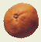
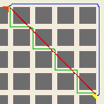
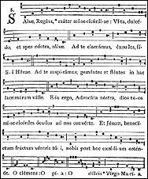

Esto va tomando color... Nos vamos abriendo al mundo... como quieren los progresistas...
Desde hoy estamos en Google. Y juntando con los buscadores de ayer tenemos la siguiente estadística:
De 22 visitas a través de buscadores, tenemos que 14 son de gente buscando porn0grafía; y de éstos, la mitad buscando fotos de ped0filia.
Qué bien...
Si alguien sabe de algún protocolo para mandar agua bendita sobre TCP/IP , por favor, comuníquese conmigo.
Lo que escribiste a las 16.28 merece ser respuesta a lo que escribiste a las 10.18.
El libro de Baudelaire que compré hace poco contiene un apéndice interesante sobre una de sus grandes influencias, el conde José De Maistre, esa figura rara, representante de cierto católicismo francés contra-revolucionario, tipo tan odiado por casi todos los bienpensantes y que sin embargo parece envejecer bastante bien (como Donoso Cortés). No conozco a ninguno de los dos, más que por referencias de segunda mano, así que no opino. Pero leo hoy este párrafo:
-
Cuando se da a un niño uno de esos juguetes que gracias a un mecanismo
interior realizan movimientos inexplicables para él, tras haberse divertido
un rato lo rompe para ver qué hay adentro. Así han tratado los franceses
al gobierno. Han querido verlo por dentro, han puesto al descubierto los principios
políticos, han abierto los ojos al vulgo sobre objetos que nunca se le hubiera
ocurrido examinar - sin pensar que hay cosas que se destruyen al mostrarlas
-
Aquel que quiebra algo para examinar cómo está hecho,
ha abandonado el camino de la sabiduría
Algunos posts interesantes en algunos weblogs, en nadakedecir* y en bloggopop (referencia a Kierkegaard y a Dolina; justa la segunda, no sé si la primera).
Otro weblog sale a putear al patriotismo : No me importa el 25 de mayo /No me importa la bandera.... etc y nos interpela: Te pusiste a pensar para que sirve todo eso?
Lindo, eso de juzgar el valor de algo preguntando para qué sirve, ¿ no ? Utilitarismo, que le llaman. Podríamos seguir:
- ¿ Alguna vez te pusiste a pensar para qué sirve la música ?
- ¿ Alguna vez te pusiste a pensar para qué sirven tus padres?
- ¿ Alguna vez te pusiste a pensar para qué sirven tus hijos ?
- ¿ Alguna vez te pusiste a pensar para qué servís vos?
- ¿ Alguna vez te pusiste a pensar para qué sirve el universo?
- ¿ Alguna vez te pusiste a pensar ?
Anduve traduciendo el artículo de Amy Welborn, que mencioné en otro post sobre la eterna pregunta Ir a misa ? para qué ?
Como era un poco largo, lo pongo aparte, acá.
Van fragmentos:
-
Este año, he comenzado a llevar a mis alumnos a un monasterio benedictino,
a unas treinta millas, para los días de retiro. No es un gran monasterio, y es
(en comparación con, digamos,Gethsemano) más bien informal.
Algo de predicación, algunas actividades, algo de predicación, algo de "discusión"... y después misa de mediodía en la capilla del monasterio. Por lejos, esto es lo más memorable para ellos. Y no estamos hablando de liturgia tradicionalista, ni bizantina, ni nada. Una pequeña y bella iglesia de piedra, los monjes entran al llamado de las campanas; pocos cantos, pero cuando cantan sus voces son seguras, fuertes y claras.
Después de comer, nos reunimos a hablar de la liturgia. Casi todos dicen preferir la misa que acaban de oir, a la misa de Pascua en su parroquia. "No hay todo ese montón de cosas raras", "Se puede rezar mejor", "Esta es música buena". Lo más increíble fue lo que me dijo un alumno el mes anterior: "El la iglesia, el domingo, todo se trata de nosotros, o de tal o cual cosa... Acá se trata de Dios".
Sabemos lo que ha pasado: en los últimos treinta años, el fin de la celebración de la Iglesia -la Eucaristía- se ha perdido en un mar de preocupaciones sobre "fortalecimiento del sentido de comunidad", "ministerio laico", "lenguaje litúrgico", "música renovada", ... y más "fortalecimiento del sentido de comunidad".
Qué fue lo que mis estudiantes "experimentaron" en el monasterio ? La Eucaristía.
Me encanta visitar esos monasterios, donde los monjes, si bien son muy amables
con uno, realmente no les importa que uno está allí o no. No hay necesidad de
bienvenidas, de intentos de "hacerte sentir en tu casa", de "hacerte sentir involucrado";
porque no están allí para eso, y suponen que uno tampoco va para eso; así pueden
tratarte como un adulto que no necesita ser manipulado y metido a los empujones
dentro de una "experiencia religiosa".
Esos jóvenes, nietos del Concilio Vaticano II, están hambrientos de este tipo
de misa, aun cuando no lo sepan, o no lo sepan expresar. Pienso en mis
alumnos que han nacido en 1980: durante sus vidas la Iglesia ha tenido que
ver con todas las cosas del mundo, pero no con la Eucaristía.
Si mis estudiantes no quieren ir a Misa, acaso será porque en verdad "no sacan nada de ella" ... en el sentido en que han sido enseñados a esperar.
...
Cuando empecé a escuchar la pregunta "Para qué ir a misa?", creía que se trataba de adolescentes provocadores buscando pelea. Pero ahora, tras años de docencia, conociendo mejor sus caminos espirituales y sus esfuerzos auténticos para encontrar a Dios, la escucho con otro ánimo. He llegado a ver que estos chicos son como todos nosotros. Preguntan simplemente porque quieren saber la razón para ir; están dispuestos a aceptar que hay una razón, pero no la encuentran en su experiencia de misas parroquiales.
Dureza de Bergoglio durante el Tedéum, dice La Nación; el arzobispo y cardenal
-
le apuntó con inusual dureza a quienes, en lugar de representar a la gente, pretenden mantener sus "privilegios, su rapacidad y sus cuotas de ganancia mal habidas".
Si esto no es el "acomodarse al siglo", que decía San Pablo, no le debe pasar lejos, creo yo.
Me hace acordar a esas publicidades que califican de "libro valiente" al que incluye la historia de siempre con un homosexual y/o un incesto (sigo poniendo palabritas para caer en los buscadores, ...maldición). Esas proclamadas valentías sin el más mínimo riesgo, y con aplauso calculado.
A riesgo de equivocarme, y aun de faltar a la caridad y otras cosas, tengo que decir que: es de suponer que Bergoglio tendrá "algo" para estar donde está; yo no tengo idea de qué será ese algo. A menos que se trate de tener un "líder" que sea un representate típico de la mediocridad y la mundanidad del catolicismo argentino en general , y del obispado en particular.
Y hoy Clarín dice que Bergoglio está entre los "papables". Bueno, pero lo dice Clarín ... y reproduciendo "el semanario de centroizquierda L'Espresso" .... ah... Me quedo tranquilo.
-
¿Por qué los "sabios" -antropólogos, historiadores de las religiones, etc- no pueden
mirar los objetos de su estudio con la misma pasión y paciencia con la que los
artistas miran la Naturaleza (más exactamente: los "objetos naturales" que quieren
pintar)? ¿Cuántas cosas no conseguiría ver un investigador en una institución,
una creencia, una costumbre, una idea religiosa, si las observase con la atención concentrada,
con la simpatía disciplinada, con la apertura espiritual que muestran tantos artistas?
¿Qué antropólogo ha mirado los objetos de su estudio con el mismo fervor,
concentración e inteligencia de un Van Gogh o de un Cézanne, ante el campo, los bosques
o los trigales?
¿Cómo comprender una cosa si no se tiene ni la paciencia de mirarla con atención?
Diario - 17/10/1964
Simona:
-
[Los sabios de la Grecia antigua] temían las consecuencias de
las invenciones técnicas, susceptibles de ser empleadas por tiranos
y conquistadores. En lugar de dar al público el mayor número posible de
inventos y de venderlos al mejor postor, conservaban rigurosamente secretos
que a veces hacían para divertirse; y, verosílmilmente continuaban pobres.
Arquímedes una vez usó su saber técnico para defender a su patria.
Lo utilizó él mismo, sin revelar su secreto a nadie. La narración de las
maravillas que supo realizar es todavía algo en parte incompresible
para nosotros. Tan así que los romanos sólo pudieron entrar en
Siracusa al precio de una semi-traición
Se ver por el lado de los geeks: mezcla de las dos cosas, como todos, con predominio de la segunda. Al menos , por el poder que da el (modesto pero palpable) prestigio...
Y la fantasía del gran hacker, el que descubre la falla en el super sistema, para poner de rodillas al enemigo (el capitalismo yanqui, Microsoft, Clarín... ?) ; o del que arma el virus que todos reciben y leen, y con el cual enseñamos nuestras triviales grandes verdades... Vanidad de vanidades .. en el mejor de los casos.
Me dirán que, al fin y al cabo, el mismo Arquímedes ejerció el poder que les dieron
sus invenciones. No. Primero, que ese poder nunca pudo ser un aliciente, una justificación
ni una fantasía para el ejercicio de su ciencia. Segundo, que el poder
lo ejerció por amor a algo (su patria), no por odio. Claro que todos los que
odian creen que aman...
Pero la prueba es fácil. Por los frutos se conoce el árbol:
Fantaseábamos hace poco con unos amigos por ese lado: imaginen -decía uno-
que uno descubre un procedimiento para romper los métodos de encriptación asimétricos
(RSA y similares). ¡Qué poder daría eso! Todos los grandes se pondrían a temblar, etc...
¿Cómo culminaba este fantaseo? Ofertando al mejor postor , claro está; vendiendo poder.
-
El amor real y puro desea siempre ante todo permanecer íntegramente en la verdad, cualquiera sea, incondicionalmente. Toda otra especie de amor desea principalmente satisfacciones, y por ello es principio de error y de mentira. El amor real y puro es por si mismo espíritu de verdad. Es el Espíritu Santo. La palabra griega que se traduce por espíritu significa literalmente soplo ígneo soplo de fuego, y designaba en la Antigüedad la noción que la ciencia designa actualmente con el nombre de energía. Lo que traducimos por espíritu de verdad" significa la energía de la verdad, la verdad como fuerza actuante. El amor puro es esta fuerza actuante, el amor que no quiere a ningún precio, en ningún caso, ni la mentira ni el error.
Para que este amor fuese el móvil del hombre de ciencia en su agotador esfuerzo de investigación, seria necesario que tuviera algo que amar. Seria necesario que la concepción que se forma del objeto de su estudio implicara un bien. De hecho es lo contrario. Desde el Renacimiento -más exactamente desde la segunda mitad del Renacimiento- la concepción misma de la ciencia es la de un estudio cuyo objeto está colocado fuera del bien y del mal, sobre todo del bien, considerado sin ninguna relación con el bien y el mal, sobre todo sin relación con el bien. La ciencia sólo estudia los hechos como tales, y los matemáticos mismos consideran las relaciones matemáticas como hechos del espíritu. Los hechos, la fuerza, la materia, aislados, considerados en sí mismos, sin relación con otra cosa; no hay allí nada que un pensamiento humano pueda amar.
Desde luego la adquisición de nuevos conocimientos no es estimulo suficiente para el esfuerzo de los científicos. Se necesitan otros.
Están en primer lugar los estímulos contenidos en la caza, en los deportes, en el juego. A menudo se oye a los matemáticos comparar su especialidad con el ajedrez. Algunos la comparan con actividades en las que se necesita olfato, intuición psicológica, porque dicen que hay que adivinar de antemano qué concepciones matemáticas, si se las desarrolla, resultarán o no fecundas. Es siempre un juego, y hasta casi un juego de azar. Muy pocos científicos penetran tan profundamente en la ciencia como para sentir su belleza. Hay un matemático que compara de buen grado a las matemáticas con una escultura en una piedra particularmente dura. Gentes que se presentan al público como sacerdotes de la verdad degradan singularmente el papel que asumen al compararse con jugadores de ajedrez; la comparación con un escultor es más honrosa. Pero si se tiene la vocación de escultor, más vale ser escultor que matemático. Examinando de cerca esta comparación, en la concepción actual de la ciencia no tiene sentido. Es un presentimiento muy confuso de otra concepción.
La técnica desempeña un papel tan importante en el prestigio de la ciencia, que podría suponerse que el pensamiento de las aplicaciones es un poderoso estímulo para los científicos. De hecho, el estímulo no son las aplicaciones, sino el prestigio que esas aplicaciones dan a la ciencia. Como los hombres políticos que sienten la embriaguez de hacer historia, los hombres de ciencia sienten la embriaguez de participar en algo grande. Grande en el sentido de la falsa grandeza, una grandeza independiente de toda consideración del bien.
Al mismo tiempo algunos de ellos, los que se dedican a investigaciones primordialmente teóricas, gustando esta embriaguez, están orgullosos de proclamar su indiferencia con respecto a las aplicaciones técnicas. Gozan así de dos ventajas, incompatibles en la realidad, pero compatibles en la ilusión, lo que siempre es una situación extremadamente agradable. Se cuentan entre los que hacen el destino de los hombres, y por tanto su indiferencia con respecto a ese destino convierte a la humanidad en una raza de hormigas; es una situación de dioses. No se dan cuenta de que en la concepción actual de la ciencia, si se la separa de las aplicaciones técnicas, no queda nada que pueda considerarse como un bien. La habilidad en un juego semejante al ajedrez es algo que no tiene ningún valor. Sin la técnica, hoy día nadie en el público se interesaría por la ciencia; y si el público no se interesase por la ciencia, los que siguen una carrera científica habrían elegido otra. No tienen derecho a la actitud de desapego que asumen. Pero aunque no sea legítima es un estímulo.
Para otros, por el contrario, el pensamiento de las aplicaciones sirve de estímulo. Pero sólo son sensibles a su importancia, no al bien o al mal. Un hombre de ciencia que se siente próximo a un descubrimiento capaz de revolucionar la vida humana hace todos los esfuerzos posibles por conseguirlo. Nunca o casi nunca ocurre, parece, que se detenga a calcular los probables efectos de esta revolución para bien o para mal, y que renuncie a sus investigaciones si el mal parece más probable. Un heroísmo semejante parece hasta imposible; sin embargo, debería ser evidente. Pero también en este caso domina la falsa grandeza, la que se define por la cantidad y no por el bien.
Simone Weil
¿Querías una foto?
Finalmente, hoy, a un mes de comenzado este weblog, empezamos a aparecer en los buscadores. Me entero por el reporte de visitas; cayeron un par, buscando ....
Las primeras visitas que me llegan "desde afuera". Tan satisfechos habrán quedado los visitantes como el visitado...
Y no es que me sorprenda. Pero igual, es de terror.
Y hoy recibí más de 30 mails de spamming coreano.
En fin. Uno de esos días
que dan ganas de largar todo, y de irse a vivir a un pueblo chiquito, sin Internet,
sin electricidad, sin civilización...
Veo la lista de 10 libros más vendidos de Librerías Santa Fe (con 4 de autoayuda, 3 de Bucay). Gana uno de Eloy Martínez, quien -según nos asegura el comentarista- le da al público lo que el público busca...
-
La corrupción política y la impunidad en un país que se va viniendo abajo,
y el creciente delirio erótico,
van dibujando un friso cuyo final, imprevisible, arrastra a los lectores otra vez a la
primera línea del libro, atrapados por una historia que se parece tanto a la vida.
-
Ésta es la historia de Cocó, una joven china aspirante a escritora, atrapada en un triángulo amoroso.
Vive con su novio, Tiantian, un joven de una sensibilidad extraordinaria que tiene
un grave problema de impotencia y que, a pesar de amar intensamente a Cocó, no puede satisfacerla sexualmente.
En una fiesta, Cocó conoce a Mark, un alemán casado con quien iniciará una aventura basada en la mutua atracción sexual pero que, inevitablemente, se irá desplazando hacia el centro mismo de su ser. En medio del caos emocional,
la voz (??) de Cocó nos muestra cómo el amor y el deseo tienen a menudo caminos separados
y nos transmite una inesperada y conmovedora sensación de verdad.
Un mes de weblog...¿Qué te parece?
No es que uno sea muy público-dependiente, pero es bueno recibir comentarios. Te gusta, no te gusta, qué te gusta más, qué te gusta menos.
Mandar a egidiodeham@yahoo.com.ar
Grazie.
-
Somos nada; queremos ser todo.
(grafitti anarquista en las paredes de la iglesia de Santo Domingo,
barrio de San Telmo, Bs. As., siglo XXI )
... para venir a serlo todo / no quieras ser algo en nada.
[*]
(San Juan de la Cruz, carmelita español, siglo XVI )
[*]
[*]
[*]
Encuentro una nueva demostración existencial de que la vida en un departamento es un aborto de la civilización moderna:
 ¿Podés pelar una mandarina criolla ?... sí
¿Podés empezar a comerla, separando gajo a gajo ? .. sí
¿Podés sentir ese olorcito que invade todo y se mete bajo las uñas para seguirte -uno diría- hasta la tumba ? .. sí
¿Podés salir al patio, para ir escupiendo las semillas en el pasto?... ¡ay!, ¡no!
quod erat demonstrandum
(también en inglés, y para geeks):
La editorial O'Reilly está por sacar un libro Essential Blogging: técnicas y consejos para armar tu weblog. En el sitio se pueden bajar los borradores (drafts), un zip de 5Mb con 9 pdfs, uno por capítulo. Es una especie de invitación a una revisión pública del libro, se pueden mandar correcciones, opiniones, etc.
-
The book isn't aimed at people who already blog, although many such readers will find useful information such as customizing their blogging software. Picture your coworkers who haven't discovered blogging yet--they know how to work their computer, they've seen a couple of blogs and figure they want to run one themselves. You should be able to give them this book and it'll educate them about choices of software and hosting, walk them through installing and using their chosen software.
(en inglés):
Un articulito: Why Go to Mass?.
Un poco de los palos de siempre a la liturgia progresista-desacralizadora; pero parece discreto y sensato, a primera vista... Veremos después si vale para traducirlo...
Una foto de Clarín:
-
De día era Christina Long, una monaguilla de 13 años y capitana del equipo de porristas en la escuela católica St. Peter de Danbury, en el Estado norteamericano de Connecticut. Su director dijo de ella que era "una buena estudiante" y que "se portaba bien".
Pero por las noches, Christina se conectaba a Internet bajo el nombre cibernético de "Long Toohot4u" y un slogan particular: "Hago cualquier cosa, por lo menos una vez". Dentro de su cuarto —reveló la Policía— usaba la computadora para recorrer los canales de chat y conocer hombres adultos para tener luego sexo con ellos. En la casilla de su estado civil aparecía: "es posible que sea soltera o tal vez no".
El lunes, su cuerpo fue encontrado a un costado de un camino, en la localidad de Greenwich. Fue estrangulada por un hombre de 25 años al que había conocido en uno de sus chateos.
...
-
Mi yo no es más que la sombra
proyectada por el pecado y el error,
que intercepta la luz de Dios,
y que tomo por un ser.
Aun si pudiera ser como Dios, más me valdría ser el polvo que obedece a Dios.
La Catena Aurea no me aportó demasiado, en realidad... todos ven la aparente contradicción, pero no encontré mucho comentario interesante que digamos...
La cosa es ésta: Por un lado Jesús dice:
-
El que no está conmigo, está contra mí
(
Mateo 12:30)
-
el que no está contra nosotros, está por nosotros.
( Marcos 9:40 y -casi igual- Lucas 9:50 )
¿Qué pasa con los que dicen:
- -Yo, no estoy a favor ni en contra
del cristianismo; no sé si la doctrina es verdadera o errónea;
no tengo una opinión formada sobre Jesús de Nazareth, y no veo la
necesidad de tenerla. No sé si Dios existe, ni si Jesús
era Dios o si resucitó... Y que me quieras hacer tomar partido en eso,
me parece tan absurdo como que pretendas que tome partido
sobre la teoría de la relatividad o sobre cuándo nació el faraón Ramsés I.
_ "Ajá! Conque no estás en contra mío. Bien. Entonces, vos sos de los míos".
En cambio, en la segunda parece que le dice
- "Ajá . Conque no estás en favor mío ? Entonces vos NO sos de los míos; estás contra mí".
Veamos ....
(continuará; se aceptan comentarios)
Bibliofilias:
Con esto del weblog estoy haciéndome poco tiempo para leer... (malhaya!).
Pero siempre alcanzo a hacerme un tiempo para comprar. Y no lo digo con orgullo: se trata de leer, no de comprar.... Cuando me mudé, el año pasado, y tuve que embalar y después acomodar (previo pasada de plumero) mis libros, me daba vergüenza... ¡cuántos libros sin leer!...
Y bueh, hay vicios peores.
Ayer pasé por uno de usados de Av. de Mayo y conseguí (hurra!) uno de cuentos de Papini, de esos de la colección "Biblioteca Borges", tapa dura negra... $5. No soy fanático de Papini, pero este libro (tres libros, en realidad: "El piloto ciego", "Lo trágico cotidiano" y "Palabras y sangre"), que había leído hace tiempo de prestado, me había gustado particularmente. Y como para acompañar, uno de Graham Greene (Nuesto hombre en la Habana ... a $1).
Y hoy aproveché que salí más temprano para pasar por la librería Romano (un clásico de los libros usados, aunque hoy no tiene tanto material como en otros tiempos) y me llevé uno de Unamuno ( tomo suelto de los ensayos "Contra esto y aquello" , $5) y uno de Baudelaire : Manuscritos póstumos , $7; éste último (recopilación de cosas publicadas en "Cohetes", "Mi corazón al desnudo", "Belgica", etc), en una edición argentina evidentemente amateur (en cuanto a cosas como armado, tipografía y ortografía), pero por lo demás nada despreciable -por lo que pispeé en el colectivo 26-.
Y tampoco se vayan a creer que me compro dos libros por día, eh... creo que desde la Feria del Libro no me había comprado nada, en realidad... tal vez algún Savarese en Parque Rivadavia, a lo sumo...
La Biblia On Line es un sitio recomendable. (argentino y católico, extrañamente...).
Sencillo y livianito en el diseño, con la Biblia, el nuevo Catecismo de la Iglesia, y las lecturas de la misa del día, entre otras cosas.
La lectura de hoy contiene ese dicho tan ... "discutible" de Jesús (Mc 9:40) :
(pero ¿cómo ? No era que "el no que no está conmigo, está contra mí, y el que no recoge conmigo, desparrama" ?
(Mt 12:30)
Aquesto no contradice aquello ? Ah, a leer y a pensar un poco...).
Veremos si esta noche leo algo de la Catena Aurea....
a propósito de Francois Villon
 Creo que siempre las matemáticas me han estropeado la cabeza...
Cuando yo era chico -digamos, unos 10 años- solía caminar desde mi casa a la de mis abuelos; simplificando un poco, unas ocho cuadras, desde la esquina amarilla a la esquina naranja del dibujo.
Bien. Alguna vez se me planteó la duda (ingeniero iba a resultar el chico, siempre optimizando...) de cuál era el camino más corto: el azul (doblar lo menos posible) o el verde (doblar en todas las esquinas)?.
Mi mejor amigo, un poco mayor, opinaba que era lo mismo.
Mi mamá, en cambio, me decía que el camino verde era más corto.
Yo estaba indeciso... y hoy veo que ellos dos -cada uno en su plano- tenían razón. Y yo, en el medio, no. Ellos pensaban bien, y yo -por sofisticado matemático-, pensaba mal. Me explico:
Mi amigo intentaba hacerme razonar, como razonaría cualquiera: son tantas
cuadras en un sentido y en otro, en los dos casos. La cantidad de cuadras es
la misma: los dos recorridos son igualmente largos.
Pero a mí me costaba verlo, porque estaba obsesionado por otra forma
de ver el problema: yo veía que el recorrido verde era más parecido
al recorrido rojo (hoy diría: el recorrido verde tiende al rojo,
cuando el tamaño de la cuadra tiende a cero. Y como obviamente
el rojo era más corto que el azul, y el verde era parecido, su longitud
debía ser más corta que la azul.
Después los años me enseñaron penosamente que la convergencia de una curva hacia otra es
una cuestión espinosa: si una curva A "tiende" a la curva B no necesariamente
la longitud de A tiende a la longitud de B.
Curioso me resulta ahora -y preocupante- que mi mente tuviera que meterse en semejante camino, donde no le quedaba otra que perderse.
Y para terminar, y no dejar mal parada a mi mamá : ella también tenía razón; pero en un plano distinto: ella me decía : "Contá los pasos y vas a ver.". Claro, porque como el ancho de las calles es finito (cosa que en los razonamientos anteriores no consideramos) y uno puede cruzarlas parcialmente en diagonal (no por la senda peatonal, claro... estamos hablando de calles de pueblo), efectivamente el recorrido verde es más corto, por algunos pasos.
Citaban en InBsAs un fragmentito de El banquete de Severo Arcángelo, de Leopoldo Marechal.
Vaya acá una página de la novela:
-
...
Al oír tan justas reconvenciones dos lágrimas rodaron por mis mejillas. Viendo lo cual Inaudi se dirigió a la mesa, tomó dos nueces y las cascó sin esfuerzo en su mano al parecer tan frágil. Se acercó a mi camilla y me dio a comer los fragmentos de nuez, uno por uno, con tan admirable solicitud que se acrecentaron mis lágrimas.
- Yo... -comencé a decir, atragantándome con las nueces.
-¿Y qué importa? -reflexionó él como si hablara consigo mismo-. Todo ser es un gesto que se dibuja y se desdibuja. Lo que valdría en cada uno es la fidelidad acierta vocación inalienable.
Tomó de la mesa el vaso de agua y me hizo beber un sorbo. Después, con una familiaridad que no lo era y que le agradecí hasta la ternura, dijo mi nombre:
-Lisandro, usted será el único Desertor del Banquete.
Intenté protestar ante aquel vaticinio. Pero Inaudi me detuvo con el gesto de un Hermes caviloso:
-Desertará usted -me anunció nuevamente-. Algún día tendré que llamarlo a usted Padre de los Piojos y Abuelo de la Nada.
-¿Y por qué? -le dije yo desconsolado ante aquella seguridad profética.
-El Banquete -definió él- será una concentración definitiva. Y usted nó está preparado. Haga memoria: su vida fue hasta hoy mismo una serie de concentraciones y desconcentraciones. Un alma demasiado inquieta.
-¿No habrá para mí una concentración última? -le pregunté llorando.
Inaudi me contempló largamente.
-La tendrá -me dijo al fin.
-¿Cuándo?
-Treinta segundos antes de su muerte. Recuérdelo: en aquel instante una voz ha de soplar a su izquierda: Está perdido. Y otra voz ha de replicar a su derecha: -Está salvado.
Sin decir más Pablo Inaudi realizó los movimientos que siguen: tomó el medio pan y me lo puso de cabecera; me desvistió del poncho salteño y me hizo tender en la camilla; luego, con el poncho, me cubrió en toda mi humanidad; y tras una mirada última, salió del calabozo, fácil corno una entelequia.
Otra vez acostado y solo, no conseguí recapitular los últimos incidentes como tenía por costumbre. Antes bien, se apoderó de mí una tierna lástima de mí mismo, cierta dulce autocompasión que otra vez me ponía en el mojado término de las lágrimas. Y lloré largamente sobre mi medio pan. Así, entre llantos, me quedé dormido en el calabozo.
En todo caso, Marechal no tiene la culpa, pobre... Y la novela está buena. Aunque no tan buena como Adán Buenosaires, hay que decirlo...
Otra de La Nación: Peter Griffin retrata intelectuales.
-
"Hicieron falta las pinturas de un inglés para que volviésemos a abrir nuestros ojos a la poesía de Neruda", dijo, en 1997, el prestigioso crítico de arte chileno Antonio Fernández.
Y eso no es lo peor!: "quizás, el próximo jueves, muchos argentinos puedan decir algo similar sobre Victoria Ocampo. " !!!
Sólo esto nos faltaba, a los argentinos...
-
"Para mí era fundamental terminar las obras en el lugar donde Victoria vivía -aclaró Griffin, entre pinceladas,
en diálogo con LA NACION-. Buenos Aires, en plena crisis, me transmitió una imagen de vulnerabilidad que yo traté de plasmar en mi obra para hacer una Victoria más humana."
-
...salvo alguna remota referencia figurativa, lo que Griffin utiliza son las técnicas mixtas y, fundamentalmente, abstractas ...
(ni siquiera sabe pintar!)
Victoria Ocampo termina convertida en una silueta sobre un fondo con los nombres de intelectuales de la época o una serie de fotos rodeada de extraños diseños geométricos
Y el final de la nota, de antología:
-
...explicó que la flema británica viene de su lado paterno.
"Como mi madre murió, me crió una abuela gitana", confesó, sacudiendo su largo pelo negro y múltiples collares..
Dice La Nación que Xuxa lanzará una muñeca, ...a su imagen y semejanza (a estos periodistas de la Nación las expresiones bíblicas se les escapan con una oportunidad, y con una naturalidad ... viste?).
-
La muñeca "Xuxa" tendrá un tamaño un poco mayor que la "Barbie", pero con cabellos más largos para que las niñas puedan jugar a realizar peinados diferentes, según la versión periodística.
(en inglés)
¿Qué hiciste este domingo?. Un sitio insólito de un católico yanki que, harto de las misas de su parroquia progresista, se mandó a hacer turismo parroquial: cada domingo en una iglesia distinta, y en cada una hace un "informe" con lo bueno y lo malo que encuentra...
Aun para los pocos que pueden encontrar eso interesante, la cosa despierta dudas -en principio-. ¿Es esto sano? ¿Es serio? ¿Es cristiano?
No sé... habrá que leer... Al menos, el tipo parece bastante sensato, y como aclara en la introducción:
- Yo me tomo muy en serio a Dios. Y a la Iglesia, la Misa y a los sacramentos.
No me tomo en serio a mí mismo.
- Toda la serie debería ser recolectada y editada como un reporte de primera mano
de la liturgia católica en EEU, a fines del siglo xx. Es precisamente el tipo de observación
histórica que resulta efímero y sin embargo revelador. Y para los inveterados "turistas
de iglesias" como yo, resulta siempre fascinante... aunque sea a veces una fascinación
algo morbosa...
Me entero ahora de que ayer subió el dólar.
Me alegra, un poquito. (Me alegra ver que me entero recién ahora; que ayer estuve despegado de esas preocupaciones).
Uno se alegra con poco, sí...
(continuación):
P. G. Wodehouse no es muy conocido en Argentina (y mientras no vomitemos a Sábato, Cortázar, García Márquez y etc....).
Busco un poco en Google, páginas en español...
En interrogantes.net
lo listan entre la literatura inglesa recomendable...
Este listado de los títulos de
una colección vieja (Al Monigote de Papel), con una curiosa -y para mí simpatiquísima-
errata: el título de la página (html) dice: Mircea Eliade (???). Nada en común,
realmente ... salvo el hecho de ser dos de mis escritores favoritos
Wodehouse tiene muchos devotos entre los (como yo) lectores de los ingleses contraculturales
cristianos del siglo xx (Evelyn Waugh, Chesterton, Lewis, Tolkien); no estoy seguro
muy bien de por qué...
Pero tiene lectores de todo pelaje. Por ejemplo,
Asimov era
fanático (y miembro de la Asociación Wodehouse). También le gusta
a
Le Carré,y a tantísimos
otros.
-
...
_ Sí, señor -contestó Jeeves con tono bajo y glacial.
_ ¿No le gusta ?
_ No, señor. Las camisas de seda con pechera floja no se llevan con el traje de noche, señor.
_ Escúcheme, Jeeves -le dije, mirándolo fijamente-, quedan muy bien. Hasta puedo aprovechar la ocasión para anunciarle que he encargado una docena de ellas en la casa Peabody & Simms; y no hace falta que ponga esa cara, porque no me convencerá.
_ Si usted me permite ...
_ No, Jeeves, -le dije, levantando una mano- es inútil discutir. Nadie respeta tanto como yo su opinión en materia de calcetines, corbatas, y hasta zapatos. Pero en materia de camisas para trajes de noche, sus nervios lo traicionan. No tiene visión de las cosas, está usted lleno de prejuicios y es un reaccionario. Terco, es el calificativo que mejor le cuadra. Puede interesarle saber que cuando estuve en Le Touquet, el príncipe de Gales asistió una noche al casino con una camisa de seda de pechera floja.
_ Su Alteza Real puede permitirse alguna licencia, señor, pero en su caso...
_ No, Jeeves -le interrumpí categóricamente-, es inútil. Cuando los Wooster nos obstinamos en una cosa...
_ Muy bien, señor.
Noté que Jeeves se sentía mortificado; por supuesto, todo el episodio había sido muy desagradable. Pero no se pueden tolerar ciertas cosas.
....
-
...
Me esforcé en hablar con voz clara y sonora, pero no las tenía todas conmigo. Todo hombre tímido se siente un poco nervioso cuando visita una casa ajena por primera vez; y la situación no mejora precisamente si, además, va allí suplantando a otra persona. Me temía que todo se iba a ir al diablo, y la apariencia de los Pringle parecía confirmarlo.
El profesor Pringle era un hombre delgado, pelado, con aspecto de dispéptico y ojos de pescado. Mrs. Pringle parecía una persona que había recibido una mala noticia al comenzar el siglo, sin que todavía hubiera podido reponerse. Y todavía estaba asimilando la impresión que me había causado esta pareja, cuando me presentaron a un par de antigüedades femeninas, envueltas en sendos velos.
_ Sin duda recordará usted a mi madre, ¿verdad? -dijo el profesor, aludiendo al vejestorio número uno.
_ ¡Oh, claro...! -dije, simulando un gratísima sorpresa.
_ Y a mi tía -suspiró el profesor, como si las cosas fuesen de mal en peor.
_ ¡Desde luego! -dije, con otra agradable expresión de sorpresa dedicada al vejestorio número dos.
_ Esta misma mañana decían que se acordaban de usted -gimió el profesor.
Hubo una pausa silenciosa.
Todas las miradas de este grupo familiar, que parecía sacado de alguna macabra escena de Edgar Allan Poe, se concentraron sobre mí. Sentí que todo mi joie de vivre se desvanecía.
...
Sin embargo, si en cambio me preguntan: "Si tuvieras que elegir un escritor, para llevarte sus libros a una isla desierta .... cuál elegirías ? " respondería (aunque esta pregunta es tan o más ridícula que la anterior) : El único, grandioso, inimitable creador de Jeeves, Bertie Wooster, el castillo de Blandings, los Mulliner, etc etc...
 Ayer, Pentecostés, fue algo así como el cumpleaños (2002 - 30 = 1972) de la Iglesia; y hoy se celebra la fiesta de la Virgen María con el título de Madre de la Iglesia.
{kind=link}
Recién estuve tratando de trascribir a midi el Salve Regina ... faltan algunos retoques pero más o menos está, creo....
[midi] ( 9 kB )
Por cierto, hay muchísimas musicalizaciones de esta oración... ésta es una versión gregoriana. Probablemente, es el canto gregoriano más conocido.
|
Salve Regina, mater misericordiae vita, dulcedo et spes nostra. Salve. Ad te clamamus exsules filii Hevae. Ad te suspiramus gementes et flentes in hac lacrimarum valle. Eia ergo, advocata nostra, illos tuos misericordes oculos ad nos converte. Et Jesum, benedictum fructum ventris tui, nobis por hoc exsilium ostende. O clemens, O pia, O dulcis virgo Maria. |
Dios te salve, Reina y Madre de Misericordia, vida, dulzura y esperanza nuestra. Dios te salve. A ti llamamos, los desterrados hijos de Eva; a ti suspiramos, gimiendo y llorando en este valle de lágrimas. Ea, pues, Señora, abogada nuestra, vuelve a nosotros esos tus ojos misericordiosos, y después de este destierro muéstranos a Jesús, fruto de tu bendito vientre. Oh clemente, oh piadosa, oh dulce Virgen María. |
En inglés. Y only for geeks; y con childish sense of humor
(o sea: sólo para mí, tal vez)...
Anotician en slashdot sobre el kernel Linux 2.5.16. Alguien comenta:
-
This kernel looks very stable so far. The only trouble I got is with the keyboard. Sometimes, it blo
Una nota (más bien escuálida) en Clarín a Suma Paz.
De los poquitísimos artistas nuestros que entienden que el asunto no se trata (al menos no siempre) de "sacarlo todo afuera", que el arte puede (y muchas veces debe) tener una faz introvertida. De los solitarios que tratan de ver y expresar la belleza con recato, delicadeza, pudor ... y una especie de pobreza voluntaria....
A veces me parece que -por ejemplo- se entiende mejor esto en ambientes como el del diseño gráfico (web incluido) que en las artes "importantes"... por no hablar de la liturgia....
Uno de los mejores poemas de Poe, Ulalume en audio (real audio).
No encontré ninguna traducción on-line... también, es un poema difícil de traducir (poéticamente), con esa sonoridad y ese clima...
-
The skies they were ashen and sober;
The leaves they were crisped and sere
The leaves they were withering and sere;
It was night in the lonesome October
Of my most immemorial year...
Misa de Pentecostés, bastante pasable, en la Iglesia de San Carlos (notable la arquitectura, el interior sobre todo, insólitamente colorido).
Verdad es que la celebración estuvo cerca de verse empañada por un asesinato: cuando al final del sermón, la vieja que estaba al lado mío, amagó con iniciar un aplauso. Pero no pasó de una palmadita tímida, casi sin querer; por lo cual decidí no estrangularla. Además, cuando llegó el momento del Padre Nuestro tuvo la decencia de no intentar tomarme de la mano; así que para el momento del "saludo de la paz" yo ya estaba aplacado...
Por lo demás, todo bastante correcto, sermón incluido.
Lo que me tiene podrido -en todos lados, pero sobre todo en la misa-
es el sonido del teléfono celular... Le comentaba a una amiga esto,
y ella me decía:
_Que les suene el celular, no es nada; lo
increíble es que atiendan.
¡Es verdad! Uno puede entender
que el tipo se olvidó de apagarlo cuando entró a la Iglesia;
pero si cuando suena lo contesta ... No me cabe en la cabeza.
¿No pueden cortarse del mundo una hora? ¿Para qué irán a misa ?
Todo un símbolo de estos tiempos, (como el zapping, como algunas navegaciones
en la web)... esa ansiedad de comunicarse al cuete, de buscar algo
para divertirse (en el peor sentido de la palabra), buscando algo
donde no hay nada. Es triste. Pero, que pase en misa, adelante del
mismísimo Dios sacramentado ... es de terror.
[Postdata]: Mi ángel de la guarda (digamos) me exige que borre casi
todo lo anterior, o que al menos confiese públicamente que yo, durante la misa, estaba pensando
en cosas tan vanidosas y tan divertidas como
la redacción de este mismísimo post...
Ufa. Bueno.. opto por lo segundo. Ya está.
-
¡Punks y las pieles para Cristo está aquí proclamar las buenas noticias de Jesús Cristo!
Quisiéramos que usted supiera que Cristo esté allí para usted. ¡Él le ama y le acepta,
APENAS PUES USTED ES !
No importan lo que usted se llama, Cristo le aman y le desean en su reino. Usted puede ser un cristiano Y un skinhead o un punk.
¡Si usted es ya un cristiano, ensamble por favor adentro!! Si usted todavía no ha aceptado a Cristo como su señor y salvador, compruébenos por favor hacia fuera.
¡Email Nosotros!!!
Divertido, de todas maneras. Uno se pregunta si esto no será un invento de alguna secta cristiana para atraer a nueva clientela... Pero no creo, no hace falta sospechar trampas, creo. Allá en el norte hay combinaciones para todos los gustos.
A la pregunta (del breve F.A.Q.):
"Soy nuevo cristiano ... qué hago?",
la respuesta es: Primero, leer el evangelio de San Juan. Después la carta de San Pablo a
los romanos. Finalmente, ir a alguna iglesia cercana para insertarse en una comunidad....
No está mal, lo primero. Pero lo último... no sé... será que uno no es muy de
insertarse que digamos... además, me imagino al punk, entrando a una secretaría
parroquial de las de por acá .... y el cura tratando de manejar la situación ... :
_ Bueno, tranquilo pibe... la plata está en ese cajón ... sí ... Cómo ? que querés qué ???
En inglés:
The Neo-Patristic Approach to Sacred Scripture en seis lecciones.
-
Aprender de los lirios del campo y de las aves del cielo,
aprender de nuestros maestros: ...
Silencio, obediencia y alegría
|
Termina el cumpleaños del Papa Juan Pablo II, el polaco
que bendice y entierra a sus enterradores. Para él,
mi cariño, mi admiración
y mis oraciones. Y empieza el domingo de Pentecostés, la fiesta del Espíritu Santo; la tercera -y la más "oculta" persona de la Trinidad, el único Dios...
Ven, Espíritu Santo |
Oración (himno " secuencia ") del siglo XII o XIII, que se lee en la misa de hoy.
Partitura y mp3.
{kind=link}